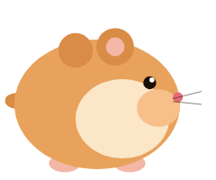
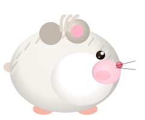
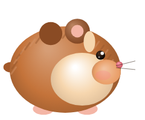
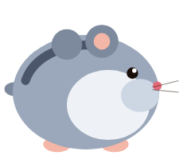
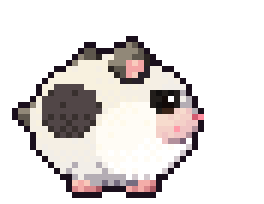
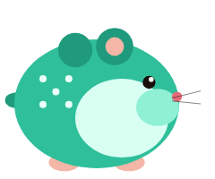

Hamster DashA deterministic, read-only game model of Squeekchain's proof-of-wheel economy
Squeekchain secures its block production with a physical signal: a real hamster running on a real wheel, where every measured magnet pass is a unit of work. Hamster Dash turns that economy into something a player can feel. It is a browser-based endless runner whose course, difficulty and rewards are derived from live Squeekchain state. Courses are generated from the current Squeekchain round, so every player in a round races an identical track. Collected seeds act as work at the chain's live difficulty, completed blocks issue SQK on the published issuance schedule, and checkpoint flags settle that SQK into a stake whose power follows the SqueekStaking formula. While the real hamster is on its wheel, the game shows it in-world and doubles work. The client is a single dependency-free HTML file that only reads public endpoints. It never connects to, or asks anything of, a wallet.
Keywords: proof-of-wheel · deterministic procedural generation · token issuance modelling · staking power · read-only dApp
1Introduction
Most token economies are invisible to the people who hold the tokens. Issuance curves, halvings, checkpoints and staking power live in contracts and documentation, and are rarely experienced directly. Squeekchain is unusual because its work signal is physical and observable: a hamster runs, the wheel turns, work accumulates, and blocks are produced. Hamster Dash takes that one step further and puts the player in the hamster's place.
The goal is a game that is fun on its own terms while staying faithful to the chain it represents. Every economic number in the game either comes from the Squeekchain API at runtime or follows the published rules exactly, and the document below specifies both.
1.1Design goals
G1Faithful economics
Work, difficulty, issuance, settlement and staking power follow Squeekchain's rules, with live parameters wherever the API publishes them.
G2Fair competition
Everyone in the same round plays the same course, and score does not depend on wallet holdings, device speed or frame rate.
G3Zero trust required
No wallet connection, no signatures, no transactions, no accounts, no analytics. Public reads only.
G4Runs anywhere
One static HTML file with no build step and no third-party code. It loads instantly on phones and can be audited in a single sitting.
1.2Contributions
- A round-seeded course generator that makes each Squeekchain round a shared, reproducible level (§4).
- An in-game economy that mirrors SqueekMining issuance and SqueekStaking power, including settlement risk (§6).
- A live coupling between the physical wheel and the game world (§5).
- A strict read-only trust model suitable for a community project (§8).
2System architecture
The system has three tiers. Squeekchain's contracts on Sepolia hold the canonical state. The public Squeekchain API exposes that state as JSON. The Hamster Dash client polls the API, derives the game's parameters, and keeps all player state in the browser. A public Sepolia RPC is used only as a fallback for one ownership check.
| Module | Input | Output |
|---|---|---|
| Round clock | genesisTimestamp, roundDuration | Current round n, course seed, countdown |
| Wheel monitor | coreStatus, speedMmPerSecond, blockHeight | Work multiplier, LIVE ghost, free-block events |
| Economy model | workPerThousandBlocks, funded blocks, schedule | Work per block, SQK per block, settlement |
| Account reader | A pasted address (optional) | Squeek skin, Squeek power P, real staking share |
| Game loop | All of the above, plus input | Frames at the display rate, run results |
3Gameplay model
The player controls a hamster that runs to the right at a speed set by distance alone (§4.3). The world cycles through four areas every 150 m (the Burrow, Sunny Meadow, Sunset Hills and Night Forest), each with its own hazards and painted parallax backdrop.
| Action | Input | Effect |
|---|---|---|
| Hop | Space, ↑, W, tap | Jump. Holding lowers gravity on the way up for a higher hop. |
| Double hop | Press again in the air | Second jump at 82% strength. |
| Duck | ↓, S, on-screen button | Lower hitbox. In the air, a fast fall. |
| Stomp | Land on an eagle or bat | Knocks it out, bounces the hamster up, restores the double hop. |
| Golden seed | Collect | Shield that absorbs one hit. |
3.1Scoring
Chained stomps (hitting several flyers without touching the ground) are worth 50, 100, 150 … points. Score deliberately ignores wallets and Squeeks, so holdings can boost the simulated SQK (§6.5) but never the leaderboard number.
3.2Characters
Players choose one of six hamsters before a run. Each one trades a strength for a weakness, so no character is strictly better and the course stays identical for everyone (§4). Five are open to all players. The sixth is a cosmetic reward for Squeek holders and has no gameplay advantage.

Pip The Golden Classic
Balanced. The reference hamster: standard hop, reach and stomp.

Mochi Winter White
Held hops 24% higher. Double hop 12% weaker. Built for long, floaty arcs.

Biscuit Cinnamon Glutton
Seed reach +40%. Hops 10% lower. Cheeks grow faster too.

Nova Blue Russian Dwarf
Starts shielded. Golden seeds ×0.5. Forgiving opening, fewer second chances.

Ziggy Panda Brawler
75 per stomp, bigger bounce. Fast fall −50%. Rewards aggressive play.

Squeek Chain Runner
Teal LED skin. Unlocks when a checked address holds a Squeek. Cosmetic only.
3.3Hazards
| Hazard | Appears | Answer |
|---|---|---|
| Pebble, pebble pair, clay mound | From the start | Hop |
| Rock spike (taller with distance) | From the start | Hop (hold for height) |
| Eagle (day) / bat (burrow, night): low | After 50 m | Hop or stomp |
| Flyer, mid height | After 50 m | Duck, hop over, or stomp |
| Flyer, high | After 50 m | Stay grounded, or stomp from a full hop |
4Deterministic courses
Fairness (G2) requires that two players in the same round face the same sequence of hazards and seeds, regardless of device. Hamster Dash achieves this by deriving the generator seed from Squeekchain's own round clock and by making every timing quantity a function of distance, not of time.
4.1Round clock
genesisTimestamp, Δ = roundDuration (600 s), both read from /v1/core(2)4.2Seeded generator
The course generator draws every random decision (hazard type, size, flyer altitude, seed row shape, golden seed, seed arcs) from one pseudo-random stream:
"hamsterdash/round/" ∥ n) )(3)Draws happen in a fixed order, and every branch consumes the same number of values, so a course depends only on n. When the round rolls over, the next run gets a new course. Each player's best score per round is kept locally so friends can compare like with like.
4.3Frame-rate independence
4.4Clearability guarantees
With jump impulse J = 900 and gravity g = 2600, a full hop lasts tair = 2J/g ≈ 0.69 s. Consecutive ground hazards are spaced by at least v · tair · 1.05 + 60 units, so after landing there is always room for another full hop.
A seed row is placed only where it is clear of every hazard on screen and of the next one to spawn, with a reaction margin of 0.32 v + 30 units on both sides. If a row would overlap, it is moved forward and the next hazard is pushed back. Separately, 35% of ground hazards carry a five-seed arc that traces the ideal hop over them. That rewards good timing instead of punishing greed.
Both guarantees are checked automatically. In a headless test of 250 sampled frames of the autoplay course, no plain seed row came within reach of a hazard.
5Live wheel coupling
The wheel monitor polls /v1/status every 5 s. When coreStatus is ACTIVE, the real hamster is running and three things change in the game:
- Double work. Every seed counts as two units of work and two seeds of score.
- The LIVE ghost. A translucent hamster runs on the far ridge at the wheel's measured speed (
speedMmPerSecond). - A shared distance. The results screen reports how far the real hamster ran during the player's run.
In addition, the monitor watches blockHeight from /v1/core. If the chain produces a Squeek block while a run is in progress, the player is credited one block of work. The game never invents wheel activity. When the wheel is idle, these effects stay off.
6Economic model
The in-game economy reproduces the life cycle of SQK on Squeekchain [1], with seeds standing in for magnet passes. The pipeline is the same on both sides:
6.1Work and difficulty
workPerThousandBlocks / 1000Read live from /v1/core. When the chain's difficulty moves, the game's moves with it.(5)Each seed contributes 1 unit of work, or 2 while the wheel is active. When accumulated work reaches Wblock, a block is completed and the remainder carries over.
6.2Issuance schedule
SqueekMining issues a base reward that halves over three periods of H blocks, plus a launch bonus spread evenly over the first N blocks [1]:
The block index b is the chain's funded block height plus the blocks completed in the run, so the game pays what the chain would pay now. During the launch window r(b) ≈ 3,674 SQK. As a consistency check, Mining minted about 7.35 M SQK over the first 1,999 blocks, which is 3,674 per block, matching the model. If the API publishes a schedule, live values take precedence.
| Period | Blocks | Base / block | Launch bonus | Total / block |
|---|---|---|---|---|
| Launch | 0 – 97,019 | 2,592 | 1,082 | ≈ 3,674 |
| 1 | 97,020 – 393,469 | 2,592 | – | 2,592 |
| 2 | 393,470 – 786,939 | 1,296 | – | 1,296 |
| 3 | 786,940 – 1,180,409 | 648 | – | 648 |
| Tail | ≥ 1,180,410 | 0 | – | 0 |
6.3Settlement and risk
On Squeekchain, completed blocks pay nobody until a checkpoint mints their SQK and routes it to staking. The game keeps that property. SQK from completed blocks is pending until the hamster passes a STAKE flag (every 100 m), and then it becomes staked. A crash before the next flag forfeits the pending amount. Pushing on for one more block is a real risk/reward decision, just as it is for a miner waiting on a checkpoint.
6.4Dash stake and staking power
Staked SQK accumulates across runs into the player's Dash stake S, stored locally. Its power follows SqueekStaking:
6.5Squeek power
A player may paste any address (or open ?address=0x…). The account reader fetches /v1/accounts/{address}. Owning a Squeek, in the wallet or staked, unlocks a cosmetic teal skin. Staked Squeeks multiply mined SQK by the same factor staking applies on chain:
The reader also reports the address's real staking power, its share of all power, and the real SQK that share earns per block. These figures are informational and are never mixed into the score.
7Data sources
| Source | Fields used | Purpose | Refresh |
|---|---|---|---|
/v1/core | genesisTimestamp, roundDuration, workPerThousandBlocks, blockHeight | Round clock, difficulty, block events | 20 s |
/v1/status | coreStatus, speedMmPerSecond, rpmMilli | Wheel coupling | 5 s |
/v1/economy/state | Funded blocks, schedule, supply, staking totals | Issuance index, economy panel | 60 s |
/v1/accounts/{a} | Squeeks, levels, staking power | Skin, boost, share | On request |
| Sepolia RPC | balanceOf | Ownership fallback if the API is down | On request |
Contracts referenced: Squeek collection 0xc4c7982657f00509548f3a3a41db7fa439a6856b, SQK 0xd78a3956cf63164d1fa1c622ad3c66623162fa1e (Sepolia). Every API call is wrapped so that a failure falls back to the last known or documented value, and the game stays playable offline.
8Security and trust model
A community game around a token is an obvious place for phishing, so Hamster Dash is designed to require no trust at all. The table lists the risks we considered and how the design rules each one out.
| Threat | Mitigation | Status |
|---|---|---|
| Wallet drain, malicious approvals, blind signatures | No wallet connection code exists. No eth_sendTransaction, no eth_sign, no EIP-712. Addresses are typed in and only read. | By design |
| Fake rewards presented as real | All in-game SQK is labelled simulated, can't be claimed, and lives only in local storage. | By design |
| Tracking and data collection | No accounts, cookies, analytics or third-party scripts. Only Google Fonts and the Squeekchain API are contacted. | By design |
| Supply-chain compromise | Zero dependencies and no build step. The deployed file is the reviewed file, under MIT on GitHub. | By design |
| Score tampering | Scores are local today. Any future shared leaderboard needs signed, verifiable submissions (§10). | Open |
| API unavailability | Documented constants as fallback, RPC fallback for ownership, and graceful degradation of live features. | Handled |
9Limitations
- Local state only. Scores, round bests and the Dash stake live in one browser. Clearing site data resets them.
- Testnet parameters. Squeekchain currently runs on Sepolia, and difficulty, issuance start and contract addresses may change at mainnet. The game reads what it can live, and §6 constants will be revised if the published rules change.
- Model, not a mirror. The economy follows the chain's formulas but runs at game speed. One run can complete many blocks, far more than one player's share of real wheel work.
- Wheel effects depend on the hamster. When the wheel is idle, the live effects are intentionally absent.
10Roadmap
- v1.0 · Nov 2026LaunchEndless runner, round-seeded courses, live wheel coupling, read-only Squeek check.
- v1.1 · Nov 2026Economy modelWork at live difficulty, real issuance schedule, checkpoints, Dash stake, Squeek power boost, this whitepaper.
- v1.2 · Nov 2026Gameplay and presentationSix playable hamsters, stomps with combos, hazard-safe seed placement and seed arcs, painted parallax worlds with smooth area transitions.
- NextPer-round leaderboardShared board per Squeekchain round, with replay-based verification. Because a course is a pure function of n, inputs can be re-simulated to validate a score.
- At mainnetOptional signed scoresOpt-in signed submissions bound to an address, only once Squeekchain mainnet parameters are final. Read-only mode stays the default.
AAppendix: parameters
| Symbol | Value | Meaning | Source |
|---|---|---|---|
| Δ | 600 s | Round duration | live |
| Wblock | wpk / 1000 | Work per Squeek block | live |
| A | 1,890,000,000 | Mining allowance (SQK) | docs [1] |
| G | 105,000,000 | Launch bonus (SQK) | docs [1] |
| N | 97,020 | Launch bonus blocks | docs [1] |
| H | 393,470 | Blocks per halving period | docs [1] |
| c | 40 SQK | Stake normaliser | docs [1] |
| Pref | 1,000 | Reference Squeek power | docs [1] |
| J, g | 900, 2600 | Jump impulse, gravity (units/s, units/s²) | game |
| — | 100 m | Checkpoint spacing | game |
| — | 150 m | Area length | game |
| — | 12% / 35% | Golden seed per row / seed arc per ground hazard | game |
BAppendix: glossary
- Work
- On chain, one measured magnet pass of the wheel. In game, one seed (two while the wheel is active).
- Squeek block
- A unit of block production, completed when accumulated work reaches the current difficulty.
- Round
- A fixed 10-minute window counted from genesis. In Hamster Dash, one round = one course.
- Checkpoint
- The step that mints completed blocks' SQK and routes it to staking. In game, the STAKE flag.
- Squeek
- Squeekchain's NFT. When staked, its power boosts SQK earnings. Two of a level merge into the next.
- Dash stake
- The player's simulated staked SQK, accumulated across runs in local storage.
- LIVE ghost
- In-world projection of the real hamster, shown only while the wheel is active.
CReferences
- Squeekchain documentation: Rewards, “How $SQK is issued”, and staking. docs.squeekchain.com/rewards
- Squeekchain developer API reference. docs.squeekchain.com/developers/api
- Hamster Dash source code (MIT). github.com/bogemon458/hamsterdash
- T. Ettinger, mulberry32, a 32-bit seeded PRNG (public domain).
478ab808-9282-4b50-b1b0-4aa3b852f280